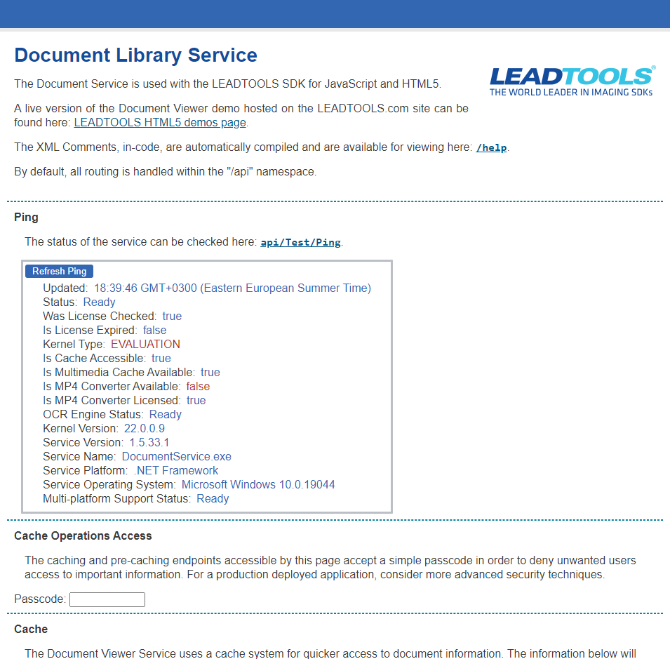

|
LEADTOOLS .NET Document Service
Demonstrates the use of the LEADTOOLS Document Viewer SDK with JavaScript and HTML5. Implemented using .NET Core.
Provides the following services:
- Get and apply action-set and rule-set analytics
- Get and set annotations (including LEAD and IBM P8 annotations)
- Retrieve data from and manage the cache
- Run compare jobs and generate reports and raster page comparison
- Manage CORS proxy
-
Document
- Decryption
- Conversion
- Get History
- Compare
- Get, set, and export document editable content
-
Document Factory
- Load documents from cache and URI
- Upload documents
- Cache and pre-cache management (Clone, delete, purge, info)
- Document and annotation download
- Load and save document attachments
-
Images
- Retrieve thumbnail images as a grid
- Load images
-
Multimedia
- Get video
- Get MP4 video
- Convert video
-
Page
- Get page as a raster image
- Get page as an SVG image
- Get SVG back image
- Get thumbnail image
- Get page text
- Read barcodes
- Get and set annotations
- Manage the status job convertor
- Parse document structure
- Test ping and heartbeat check of the connection to the service
|
 |